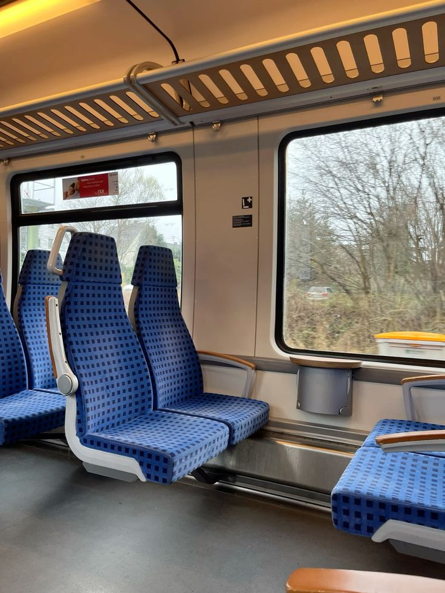
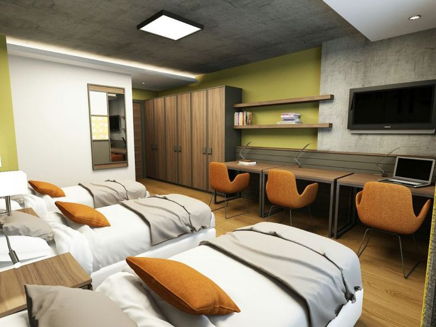

KcLogger'ın yaptığı her şey, tek platformda.
5651 uyumlu imzalı loglama, kategori bazlı filtreleme ve giriş ekranında pazarlama. Tüm lokasyonlarınız tek panelde.
Dokuz temel özellik
Dashboard, sisteminizin genel durumunu tek ekranda özetler. Bu bölümde toplam cihaz sayısı, cihazlar üzerinde kayıtlı kullanıcı sayısı, aktif ve online kullanıcı durumu, online cihaz sayısı, toplam veri trafiği (download / upload), toplam giriş sayısı ve lokasyon bilgileri görüntülenir.
Veriler hem sayısal hem de grafiksel olarak sunulur; böylece sistemin genel kullanım durumunu hızlıca değerlendirebilir ve analiz edebilirsiniz.
Bu bölümde, cihazınız üzerinden hotspot ağına bağlanan kullanıcıların internete erişmeden önce karşılaştıkları captive portal (karşılama / giriş sayfası) özelleştirilir.
Giriş sayfasının tasarımını panel üzerinden isteğe bağlı olarak düzenleyebilir; içeriği, görsel yapıyı ve kullanıcı deneyimini ihtiyaçlarınıza göre şekillendirebilirsiniz. Ayrıca oluşturduğunuz tasarımın mobil, tablet ve masaüstü cihazlarda nasıl görüneceğini önizleme ekranı üzerinden kontrol edebilirsiniz.
Yönetim panelinin genel davranışlarını özelleştirebileceğiniz ve sistem genelinde geçerli olacak ayarları yapılandırabileceğiniz bölümdür. Farklı alt başlıklar altında sunulan seçenekler sayesinde hem kullanıcı deneyimini hem de sistem yönetimini esnek bir şekilde düzenleyebilirsiniz.
Sistemde kayıtlı tüm kullanıcıların görüntülendiği ve yönetildiği ana bölümdür. Kullanıcı listesi üzerinden detaylı inceleme yapabilir, kullanıcı bazlı işlemleri hızlı bir şekilde gerçekleştirebilirsiniz.
Kullanıcıları belirli kriterlere göre gruplandırarak daha düzenli ve esnek bir yönetim sağlamanıza olanak tanır. Oluşturduğunuz kullanıcı grupları sayesinde aynı özelliklere sahip kullanıcıları tek bir çatı altında toplayabilirsiniz.
Kullanıcılar için farklı kullanım senaryolarına uygun profiller oluşturabilir ve bu profiller üzerinden çeşitli erişim ve kullanım kısıtlamaları tanımlayabilirsiniz. Oluşturduğunuz profilleri kullanıcı veya kullanıcı gruplarına atayarak merkezi bir kontrol sağlarsınız.
Ağ üzerinden internete çıkan kullanıcıların erişimlerini kontrol etmek ve güvenlik politikalarını yönetmek için kullanılır. İhtiyacınıza göre belirli web sitelerine erişimi engelleyebilir veya yalnızca izin verilen sitelere erişim sağlanacak şekilde kurallar tanımlayabilirsiniz.
Sistemdeki tüm kullanım verilerinin belirli filtrelere göre analiz edilmesini ve detaylı raporlar halinde görüntülenmesini sağlar. Başlangıç ve bitiş tarih aralığı seçerek istediğiniz zaman dilimine ait verileri kolaylıkla raporlayabilirsiniz.
Kullanıcıların ağa erişim güvenliğini kontrol etmek ve yetkisiz girişleri engellemek için kullanılan gelişmiş güvenlik ayarlarını içerir. Sistem üzerinden hem telefon numarası bazlı hem de MAC adresi bazlı kısıtlama yapabilirsiniz.
Erişim kaydı tutulan her yer
Erişim kaydı tutma zorunluluğu olan her işletmede KcLogger devreye girer.




Network Tools (Araç Takımı)
Ping
Ping aracı, belirli bir IP adresine veya alan adına (hostname) erişilebilirliği test etmek için kullanılır. Bu test sayesinde hedef cihazın ağa erişip erişmediğini ve yanıt süresini (latency) kolaylıkla ölçebilirsiniz.
Traceroute
Traceroute aracı, hedef bir IP adresine veya alan adına giden ağ yolunu adım adım analiz eder. Bu sayede veri paketlerinin hangi noktalardan geçtiğini görüntüleyebilir, olası bağlantı problemlerinin hangi aşamada oluştuğunu tespit edebilirsiniz.
IP Scan (Ağ Tarama)
IP Scan aracı, belirli bir ağ aralığında aktif cihazları tespit etmek için kullanılır.
Telnet
Telnet aracı, belirli bir IP adresi veya hostname üzerinden seçilen porta bağlantı testi yapmak için kullanılır. Hedef IP adresini veya hostname bilgisini ve bağlantı kurulmak istenen port numarasını girerek ilgili servisin açık olup olmadığını ve erişilebilirliğini kontrol edebilirsiniz.
System Reboot
Bu seçenek, cihazın yeniden başlatılması için kullanılır. Kullanıcıya iki farklı seçenek sunulur: anında yeniden başlatma ve gecikmeli yeniden başlatma. Gecikmeli yeniden başlatma seçeneği sayesinde, planlı işlemler sonrasında cihazın otomatik olarak yeniden başlatılmasını sağlayabilirsiniz.
Üç adımda denetime hazır
Bağlayın
Mevcut erişim noktalarınızı marka bağımsız olarak KcLogger'a bağlayın; altyapınızı baştan kurmanıza gerek yok.
İmzalayın
Her erişim kaydı zaman damgasıyla imzalanır; bulutta ya da kendi veri merkezinizde saklanır.
Yönetin
Tüm lokasyonlarınızı tek panelden ya da mobil uygulamadan yönetin; denetime her an hazır olun.